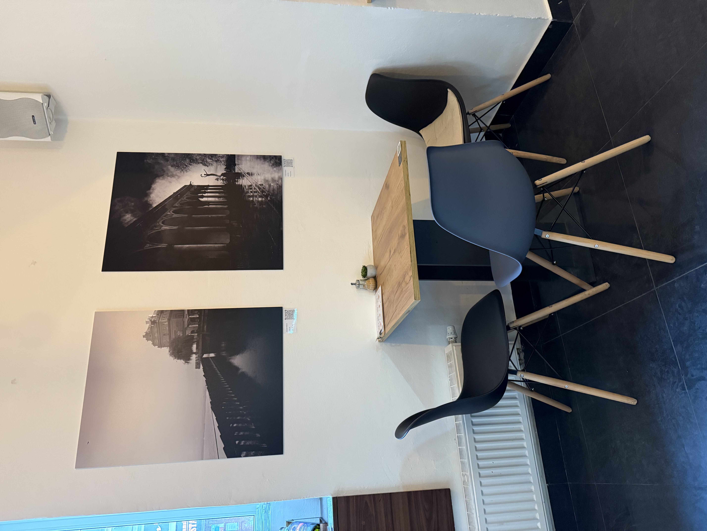
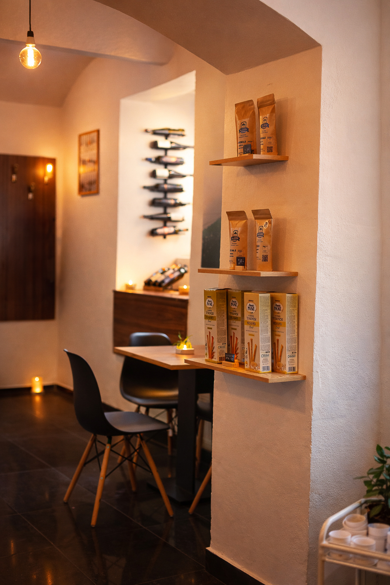
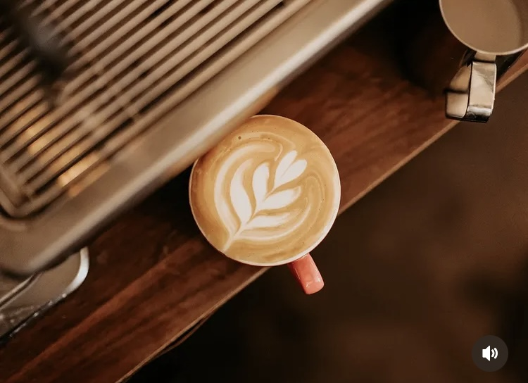
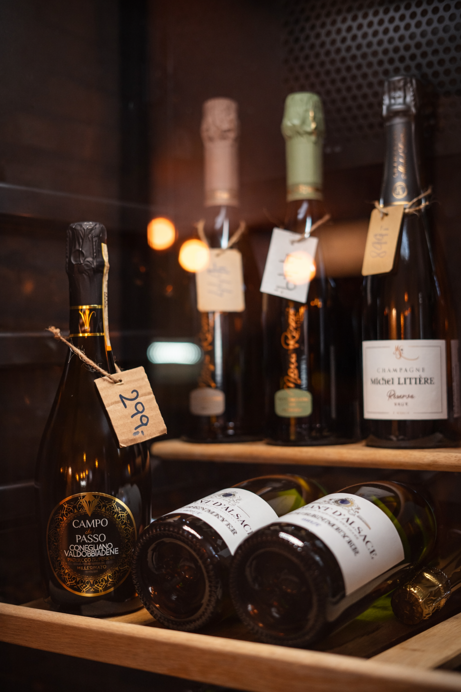
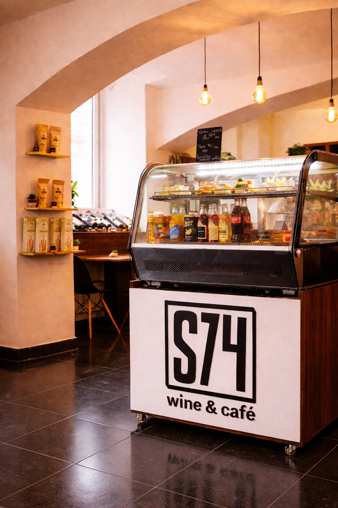
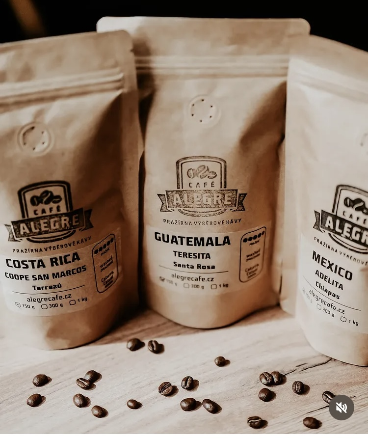
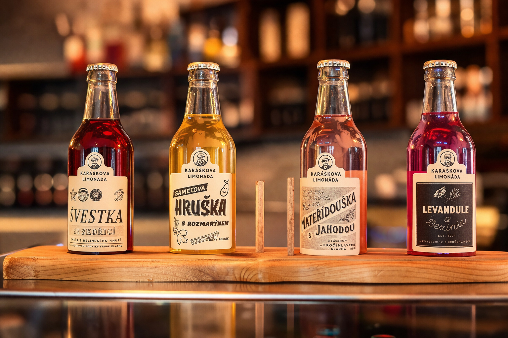
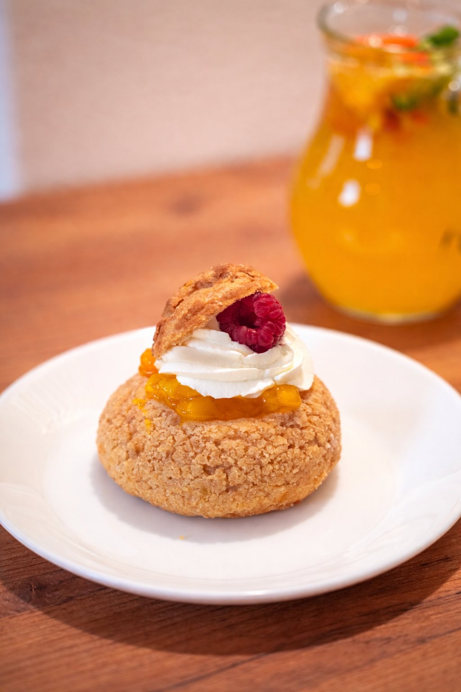
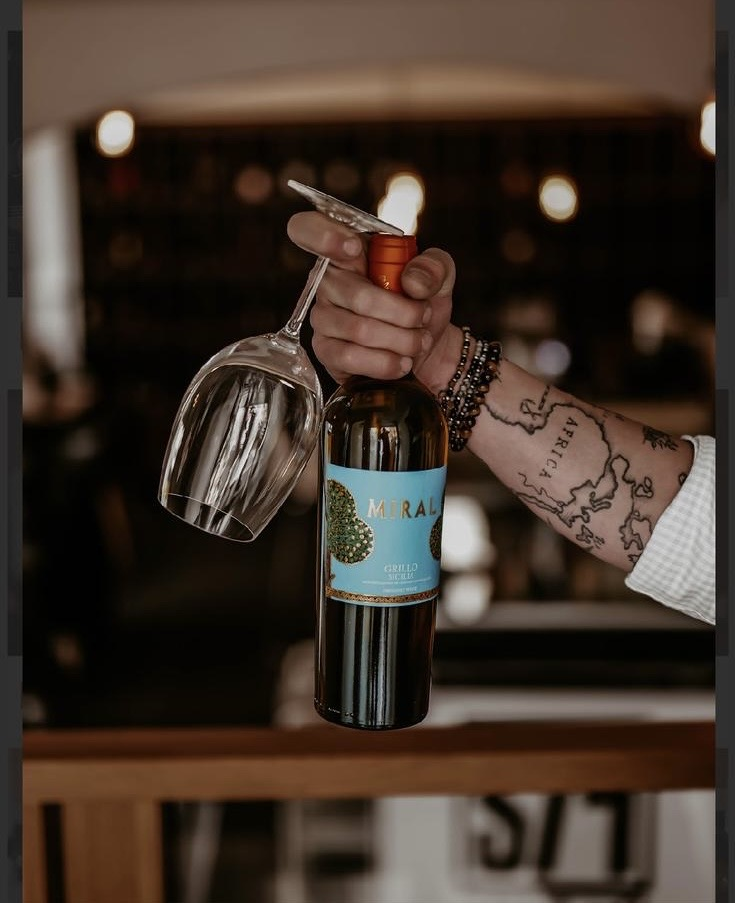
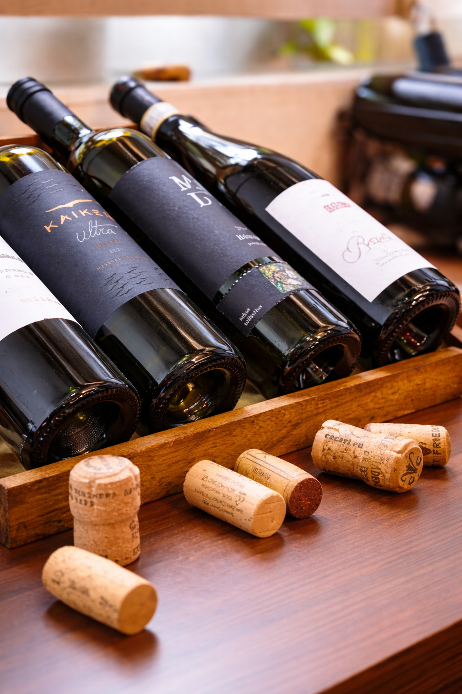

Vinohrady, Praha 3
S74 wine&café
Kavárna. Wine bar. Místo na setkání.
Přes den výběrová káva a domácí dezerty. Večer sklenka pečlivě vybraného vína a pohodové posezení ve Slezské ulici.
O S74
S74 wine&café je kavárna a wine bar na Vinohradech, kousek od Jiřího z Poděbrad a náměstí Míru. Přes den se u nás zastavíte na výběrovou kávu, domácí dezert nebo limonádu, večer na sklenku pečlivě vybraného vína.
Stavíme na klidné atmosféře malé kavárny, osobním výběru vín a místě, kam se hodí přijít na ranní espresso, odpolední schůzku i večerní posezení.
Přijďte na krátkou zastávku po cestě, pomalejší kávu s dezertem nebo delší večer u sklenky. Když chcete mít jistotu místa, stůl si můžete rezervovat online.

Nabídka

Výběrová káva
Ráno začínáme espressa, cappuccina i filtrovanou kávu. Každý den pro vás připravujeme kávu z aktuální nabídky pražírny — svěží espressa i jemné překapávané varianty.
Káva je u nás základ. Ať už potřebujete rychlý šálek před cestou, nebo chcete posedět s notebookem a druhým kafem.
Vína na sklenku i lahve
Večer se S74 promění ve wine bar. Nabízíme pečlivě vybraná vína, která si můžete dát na sklenku nebo odnést lahví domů. Dáváme přednost malým vinařům a zajímavým odrůdám.
Přijďte ochutnat, nechat si poradit, nebo jen tak strávit večer u sklenky s přáteli.


Drobné občerstvení
Káva i víno si zaslouží společnost. U nás najdete domácí dezerty, lehké sladké i slané zastavení a osvěžující limonády.
Vše doplňujeme podle sezóny a nálady — náš výběr se mění, kvalita zůstává.
Atmosféra
Od ranního espressa až k pozdním večerním rozhovorům.
-

-

-

-

-
-

-

-

-

-

-
